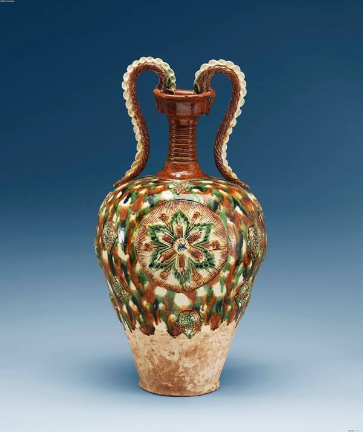
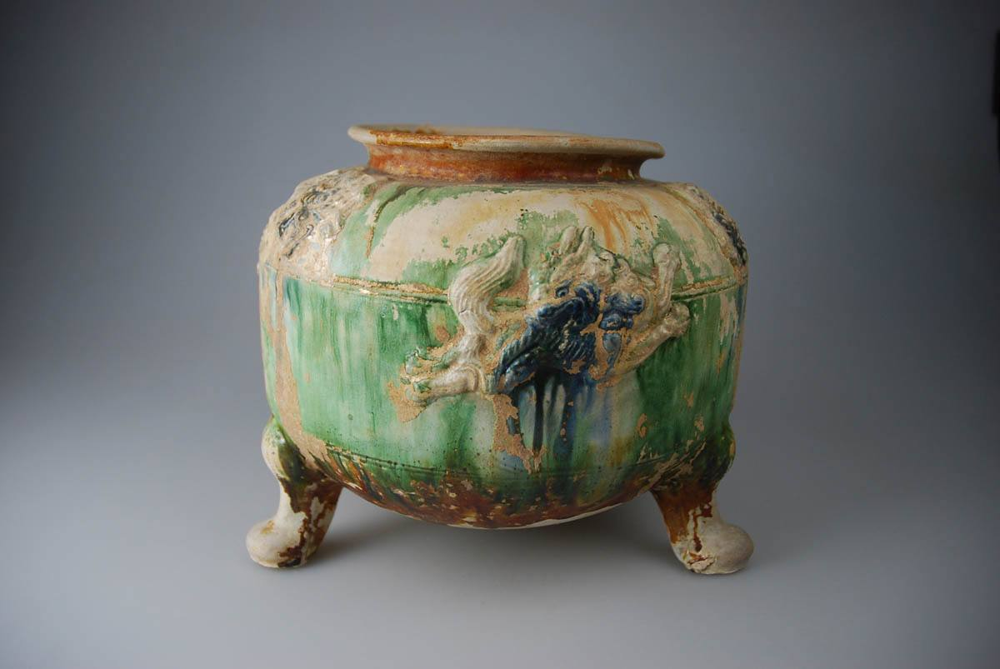

唐三彩
作者：Cindy 日期：2017-5-16
唐三彩，是从唐墓挖掘出来的陶器之泛称，后来学者视为一种陶瓷分类上的术语。
唐三彩并非专指那三种色彩而言。在唐墓中所挖掘出来的各类陶俑、陶像，以及其他陶器上，有的只有单彩，或者二彩，有甚多的器物，却具有较复杂的多彩颜色。一般而言，除了胎体的白地之外，铅黄、绿、青三彩最为普遍，在三彩的调配技法上，也最富艺术的韵味。唐三彩的器皿较少，而小马、小家畜、小家禽数量较多，均具丰美的艺术意匠，尤以各种人物的陶俑，以及超自然形象的魌头，最具艺术价值。三彩器正表现出唐代各种实际生活所应用的器物，而在这些器物中，却把当时社会生活的形态很完备的呈现出来，由此获知殉葬的明器与其他器物的形制与数量，均按照墓葬者生前官阶，以及门第的大小而定。例如唐礼明器之制，三品以上九十事，五品以上六十事，九品以上四十事。挺马偶人高一尺。其他音乐队、童仆之属、威仪服玩，亦各视其生前之品秩而定之。初唐之末期，始兴厚葬之风，其后自盛唐至中、晚唐，厚葬之风益甚，舁明器而行街衢，陈墓所，奏歌舞音乐，张帷幕，设盘牀，以造花、人形、饮食施路人，殆如祭祀。因为唐代讲究以三彩明器作为陪葬品，所以，从清末建筑河南汴洛铁路以来，在洛阳北郊邙山等地之唐墓中，先后发掘为数颇多之三彩器与俑像。唐三彩不论其形制与色彩之施化，均具极高之艺术意匠，乃引起日本、欧美各国人士之注目，而以高价购藏，从此唐三彩遂被列入世界艺术之一部分。以上引自君友会王爱君美术文献《唐三彩》。唐三彩制作最盛之时为开元、天宝至大历年间（公元七一三～七六六年）。其艺术成就是震古铄今，闻名中外的。唐三彩是由一个健全强明的朝代所启毓而成，同时，它也具体而活跃的反映出此一健全强明的时代精神。
唐三彩在中国文化中占有重要的历史地位，在中国的陶瓷史上留下了浓墨重彩的一笔。唐三彩诞生于唐代是有其文化渊源的。首先，成熟的陶瓷技术是唐三彩诞生的物质基础；其次，唐代盛极一时的厚葬之风是促成其诞生的直接导向；第三，唐代各个领域的历史文化是孕育其最好的艺术养料。唐三彩的诞生也是三彩釉装饰工艺的诞生，是釉彩装饰和胎体装饰结合的过程。辉煌璀璨的唐三彩，其绚丽斑斓的艺术效果在雕塑精美、造型生动的俑上得到了完美的发挥和淋漓尽致的展现。
唐代是我国封建社会的鼎盛时期，所以说唐三彩从另外一个侧面也反映了这种唐王朝的政治、文化、生活，它跟唐代诗歌、绘画、建筑其他文化一样，共同形成了唐王朝文化的旋律，但是它又不同于其他的文化艺术，从现代的陶瓷史上认为，唐三彩在唐代陶瓷史上是一个划时代的里程碑，因为在唐以前，只有单色釉，最多就是两色釉的并用，在我国的汉代，已经有了两色，即黄色和绿色两种釉彩在同一器物上的使用。到了唐代以后，这种多彩的釉色在陶瓷器物上同时得到了运用。从陶瓷史上有人考证，这和唐代当时的审美观点起了很大的变化有关。在唐以前人们崇尚的是素色主义，到唐代以后，它包容了各种文化，包括许多外来文化，这个时候从绘画、陶瓷、金银器的制作，形成了一个灿烂文化的特点。